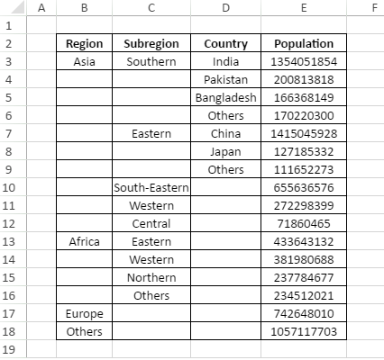
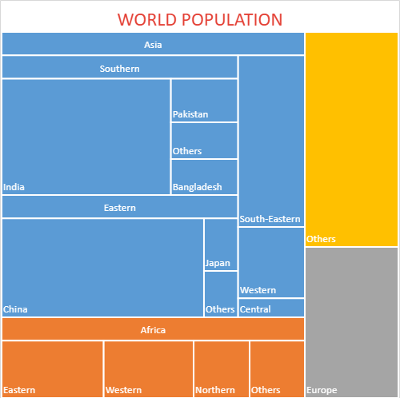

A treemap chart is a two-dimensional linear chart that can be used to display the hierarchical data as a set of nested rectangles organized in a tree-like structure in the worksheet.
SpreadJS supports treemap charts in spreadsheets for enhanced data visualization and effective information analysis. This type of chart is useful especially when users have space constraints and they need to plot thousands of datapoints with numerous entities defined in the tables in the worksheet.
In a treemap chart, users can compare quantitative values or aggregated values within one or more categories via visualizing data as colored rectangles (called branches), with each branch (or rectangle) representing a level in a hierarchy containing other rectangles ( called leaves). The area (inner space) of each rectangle is allocated according to the measured quantitative value. The rectangles are arranged based on their numeric dimensions (width and height) from the upper left corner (largest size) to the lower right corner (smallest size).
In SpreadJS, the Points class represents all the dataPoints in a chart series. Datapoints can be used to represent each highest level and their sub data points in the hierarchical data.
For instance, let's take an example of world population as shown in the below table with four major regions representing datapoints (top levels) - Asia, Africa, Europe and Others. These regions are further divided into subregions, which are further divided into countries with each country having unique population statistics.

When a treemap chart is created for the above data, it becomes much easier and faster to understand information in hierarchically structured rectangles that depict the overall summary of the bulk data lying in the spreadsheets.
An image of the treemap chart depicting world population for the above plotted data for different regions, subregions and countries is shown in the below screenshot. Each category or level is represented by a unique rectangle filled with a different color that makes it simple to compare different categories.

Clearly, the colored rectangles in the above image depict four different categroies (Asia, Africa, Europe and Others) amongst which Asia is the region with highest population in the world (the largest rectangle being placed at the upper left corner) and Europe is the region with lowest population in the world (the smallest rectangle being placed at the lower right corner). Also, the most populous country accroding to the above chart is China in the Eastern subregion.
This example shows how to set the treemap chart in a worksheet.
| JavaScript |
Copy Code
|
|---|---|
// Creating Treemap chart window.onload = function () { var spread = new GC.Spread.Sheets.Workbook(document.getElementById("ss")); var sheet = spread.getActiveSheet(); sheet.setColumnWidth(2, 100); sheet.setColumnWidth(4, 100); var dataArray = [ ['Region', 'Subregion', 'country', 'Population'], ['Asia', 'Southern', 'India', 1354051854], [, , 'Pakistan', 200813818], [, , 'Bangladesh', 166368149], [, , 'Others', 170220300], [, 'Eastern', 'China', 1415045928], [, , 'Japan', 127185332], [, , 'Others', 111652273], [, 'South-Eastern', , 655636576], [, 'Western', , 272298399], [, 'Central', , 71860465], ['Africa', 'Eastern', , 433643132], [, 'Western', , 381980688], [, 'Northern', , 237784677], [, 'Others', , 234512021], ['Europe', , , 742648010], ['Others', , , 1057117703] ]; sheet.setArray(1, 1, dataArray); var chart = sheet.charts.add('chart1', GC.Spread.Sheets.Charts.ChartType.treemap, 450, 0, 500, 500, "B2:E18"); var title = chart.title() title.fontSize = "24.00"; title.color = "rgb(228,65,54)"; title.text = 'WORLD POPULATION'; chart.title(title); var dataPoints = chart.series().dataPoints(); var fillColors = ['#4472c4', '#a5a5a5', '#ffc000', '#ed7d31']; fillColors.forEach(function (color, index) { var dataPoint = dataPoints.get(index); dataPoint.fillColor = color; dataPoint.transparency = 0; // 0~1 dataPoints.set(index, dataPoint); }) }; |
|